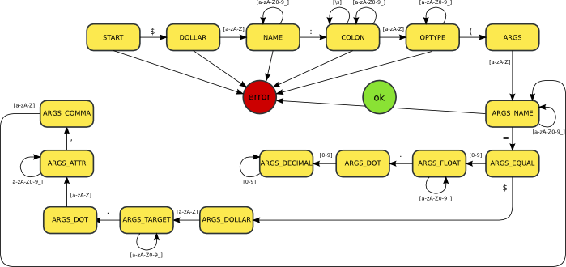

This is a basic interpreter for Daffy assembly code.
The interpreter expects instructions in the form:
$name: optype([argname=$target.attr | <float value>], ...)
one instruction per line.
Instruction parsing is done by the very simple state machine represented by this
scheme:
Warning
the image is only a draft and not finished yet

-
exception daffy.vm.interpreter.ParserSyntaxError[source]
A syntax error
-
exception daffy.vm.interpreter.ParserUndefinedState[source]
The parser reached an undefined state
-
daffy.vm.interpreter.instruction_parse(instr)[source]
Parse an instruction
-
daffy.vm.interpreter.instruction_schedule(instruction, scheduler)[source]
Parse an instruction and schedule the resulting operation for
execution
-
daffy.vm.interpreter.DVM_instruction_run(instruction, scheduler)[source]
Run a single instruction
-
daffy.vm.interpreter.DVM_program_run(program, scheduler)[source]
Run a Daffy program